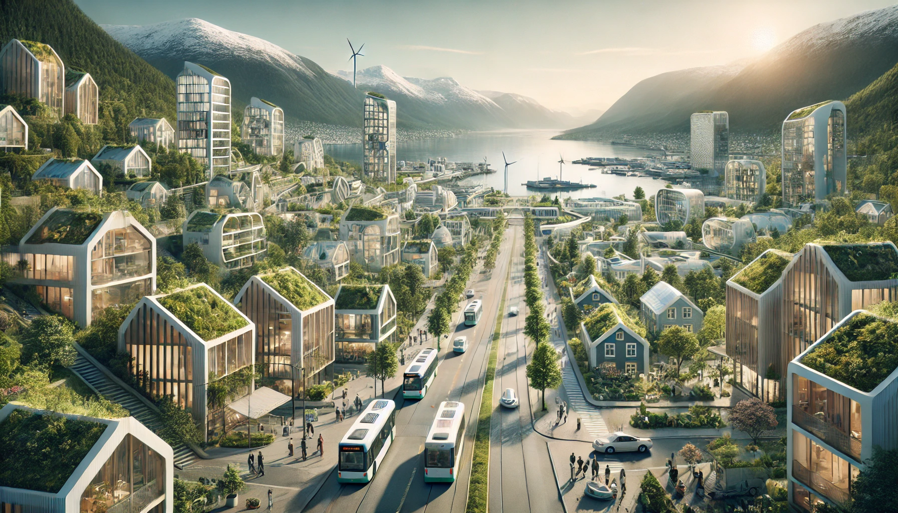

Visjon og Mål:
Prosjektets visjon er å skape fremtidens bærekraftige og trygge byer, hvor teknologiske løsninger
fremmer miljøvennlighet, trivsel og inkludering for alle innbyggere. Hovedmålet er å integrere innovativ
teknologi for å optimalisere byens transport, miljøovervåkning og ressurseffektivitet, og dermed sikre
en grønnere, mer helsevennlig og tilgjengelig by for alle
Bakgrunn:
Den raske urbaniseringen har skapt et økende behov for bærekraftig byutvikling. Med befolkningstettheten
i byene kommer utfordringer knyttet til forurensning, energiforbruk, og infrastruktur. Teknologi spiller
en avgjørende rolle i å møte disse utfordringene ved å muliggjøre smartere styring av ressurser og mer
effektive løsninger for både innbyggere og miljø. IT kan drive utviklingen av smartere
transportsystemer, overvåke og forbedre luftkvaliteten, og sikre at helse- og miljøstandarder
opprettholdes i byene.
Prosjektbeskrivelse:
Dette prosjektet har som hensikt å utvikle og implementere teknologiske løsninger som fremmer
bærekraftig byutvikling. Gjennom bruk av smarte sensorer, kunstig intelligens og digitale plattformer,
skal prosjektet overvåke miljøfaktorer som luftkvalitet, støy og energiforbruk. Målet er å skape byer
som er både miljøvennlige og innbyggerfokuserte, med forbedret transporteffektivitet og redusert
karbonavtrykk. Forventede resultater inkluderer renere luft, bedre folkehelse, mer effektiv ressursbruk
og økt innbyggerengasjement for bærekraftige løsninger.